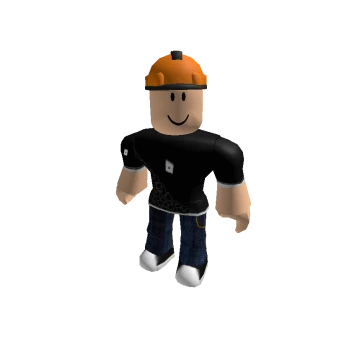
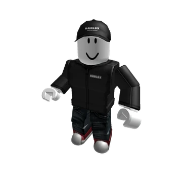
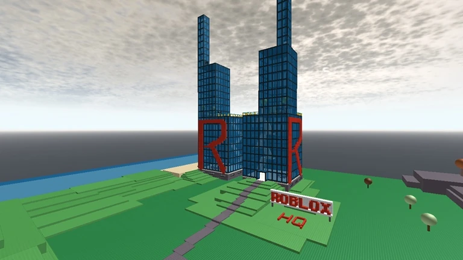

Roblox HQ était un lieu emblématique dans l'ancien Roblox, représentant le siège virtuel de la plateforme. Il servait de point central pour l'imagination des joueurs qui voulaient interagir avec l'équipe officielle de Roblox.


Le Roblox HQ apparaissait dans plusieurs jeux de la communauté, souvent recréé par les joueurs nostalgiques. Il symbolisait une époque où Roblox était encore en pleine expansion et où la communauté était fortement engagée dans ses traditions.
